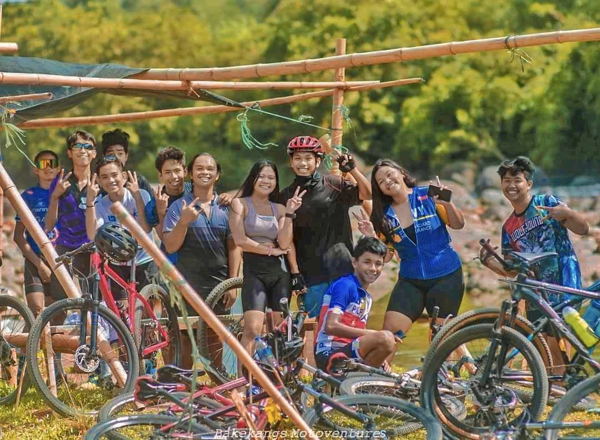
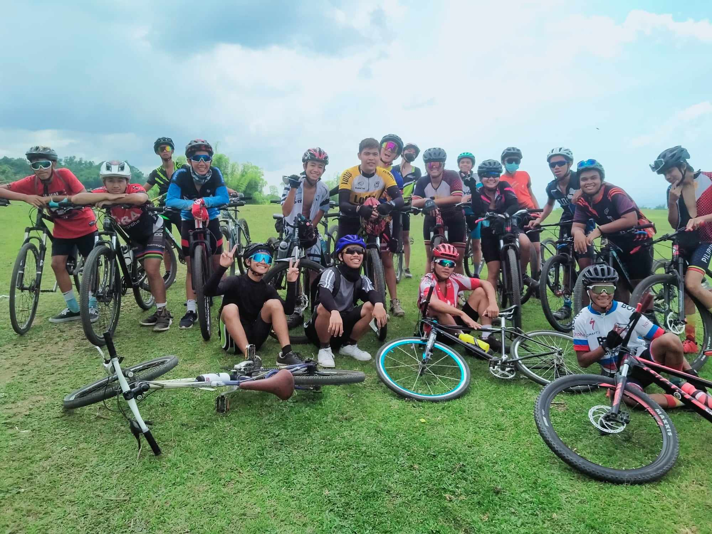

Welcome to the Negros Wheel Warriors Club
We are proud to introduce the Negros Wheel Warriors Club, a passionate community dedicated to mountain and road biking in the beautiful region of Negros Occidental. Our club brings together cyclists of all levels, from beginners to veteran riders, fostering a love for biking and an appreciation for the stunning landscapes our area has to offer. Join us in exploring the diverse terrain, from challenging mountain trails to scenic road routes, while promoting a healthy and active lifestyle. Whether you ride for adventure, fitness, or camaraderie, the Negros Wheel Warriors Club is your home for all things biking in Negros Occidental.
About Negros Wheel Warriors Club
The Negros Wheel Warriors Club is a vibrant community of mountain and road biking enthusiasts based in Negros Occidental. Our name embodies the spirit of adventure and camaraderie that defines our club. We cater to cyclists of all levels, from those just beginning their biking journey to experienced riders seeking new challenges.
Our mission is to promote the joys of biking while exploring the diverse and beautiful landscapes of Negros Occidental. Members of our club enjoy a wide range of activities, including organized rides, skill-building workshops, and community events. Whether you’re navigating rugged mountain trails or cruising scenic road routes, you’ll find a supportive and enthusiastic group of fellow riders in the Negros Wheel Warriors Club.
Join us as we pedal through breathtaking terrains, improve our biking skills, and build lasting friendships. The Negros Wheel Warriors Club is your gateway to experiencing the thrill of biking in one of the most picturesque regions of the Philippines.